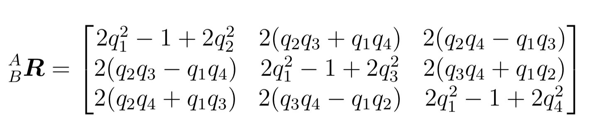
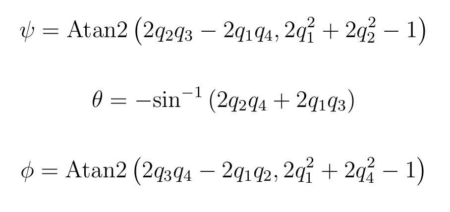

Potential Technologies
Bespoke Java Application
Originally, we were using a java application written by someone working with our client. From this, we intended to receive the data from the sensors and integrate it into an android application. However, attempting to implement this ran us into a number of problems.
First of all, the java application is only compatible with a 32 bit java virtual machine, which means a lot of configuration to get it to work. Despite best efforts, we only managed to get it working on a windows machine and not mac OS. This outdated technology would only lead to further problems down the line if another engineer were to take over our project.
Additionally, the legacy code has been developed in a way such that it is compatible with Android Developer Tools (ADT) and not Android Studio. However, ADT is no longer supported as of June 2015, and has many known bugs and potentially security risks. To solve this issue, we attempted to make the java application compatible with Android Studio. However, we could not manage to integrate this on our devices.
It was finally decided that we would not be able to use the pre-written Java application for our application, so now we are using Android Studio to develop the user interface side of the application.

Fitbit API [1]
With our initial task falling through, our client proposed we retrieve data from the Fitbit API and integrate this into our mobile application. The data is in the form of a json file and provides statistics such as calories, heart rate, average speed etc.
Although it is ideal that the data has already been analysed, this means we cannot analyse the raw data ourselves to find the specific statistics we wanted. As a result, we would only be able to collect general data rather than wheelchair specific data.
Additionally, the Fitbit API is designed for web applications, and it proved very difficult to integrate with a mobile application. In our given time frame that was reduced due to complications, it was not possible to complete this task. Instead, we created a json file generator to replicate the incoming data from the fitbit.
Potential Algorithms
Algorithms: Inertial Measurement Unit (IMU) [2]
Originally our application was going to retrieve data from the bespoke ARCC sensors our client provided. This data came in the form of accelerometer, gyroscope and magnetometer data. Although our project no longer requires the analysis of data in this form, our initial research gave us an introduction to the possible interpretations of data using a wheelchair, which helped us utilise the data from the fitbit API further down the line. For this reason, it is important to note the initial research we undertook.
Speed = Distance / Time
We initially decided to work out the speed using the time and distance and started by reading research papers that had worked on similar projects using inertial measurement units. From this we followed suite, and intended to attach the sensor to the wheelchair and use the number of full rotations of the wheelchair to determine the distance travelled.
At present, the application for the ARCC sensors uses UNIX Epock to provide the time as a unix time stamp, representing the seconds that have passed since Jan 1st 1970. There is no need to convert the epoch time to digital time. Instead, we can work out the time simply by subtracting the final epoch from the starting epoch to get the seconds elapsed between the two periods of time.
Orientation Filter
To find the distance travelled by the wheelchair, it is essential to first work out the orientation of the sensor by integrating the angular velocity from the gyroscope over time. Additionally, measurement errors from the gyroscope need to be eliminated or else errors will accumulate when the orientation is calculated. The algorithm we looked into calculates the orientation of the sensor around the pitch, or lateral, axis. The pitch axis has its origin at the center of gravity.
The orientation filter provides a result in quaternion representation, a four-dimensional complex number to represent orientation of a rigid body in three-dimensional space. Quaternion arithmetic often requires that a quaternion describing an orientation is first normalised, so it is conventional for all quaternions to be of unit length.
This describes the orientation of frame B relative to frame A
This represents a vector described in frame A
This is how the orientation of frame B relative to frame A is defined.
rx, ry and rz define the components of the unit vector x, y and z in frame A respectively.
1. The orientation described by A/Bq can be represented as the following rotation matrix:

2. From here, the Euler angle representation can be defined by the following equations

3. Given the angle, the next step is to simply calculate the distance by finding the size of the circumference of the wheel and multiplying this by the number of times the wheel rotates. However, this analysis describes a massively simplified set of steps and in reality we were unable to implement the algorithm with our knowledge.
Algorithms: Fitbit
A lot of the data from the fitbit API has already bee analysed and already provides us with statistics such as calories burnt, heart rate, distance, max speed and average speed. However, we looked into interpreting this data to produce some interesting statistics.
1. Determining Periods of Exertion
One algorithm we considered was the use of heart rate to find periods of exertion throughout the game. When the heart reaches over a certain percentage of the player’s resting heart rate for a set of period of time, it could be said they are experiencing a period of exertion.
The positives of this algorithm are that it lets the player see how hard they exerted themselves throughout the game, and whether this decreased towards the end of a game, which implies their fitness is a factor affecting their game play.
However, this could encourage vulnerably ill people to overexert themselves, which can lead to safety risks.
2. Calories burnt to determine whether user is in 'weightloss' zone
Another algorithm taken into consideration was an algorithm to determine whether the player is in a calories deficit. To do this, we would take the user’s weight and height to find their estimated resting metabolic rate. The metabolic rate could be divided by the average wake hours to find the estimated calories the player would play in a set time. Then we could compare how many calories the player actually burnt in that period. If the player is in deficit calories, the algorithm would determine that they are in weight loss period.
This algorithm has positives in that it can help a player maintiain or lose weight if that is their health goal. However, it uses a lot of estimations and therefore may not be entirely accurate. Additionally, a calorie deficit works over a day period rather than the length of a basketball game or training, making a marked ‘weightloss period’ redundant if the player spends the rest of the day in surplus calories.
Summary
References
[1] https://www.fitbit.com/dev/dev [2] http://x-io.co.uk/open-source-imu-and-ahrs-algorithms